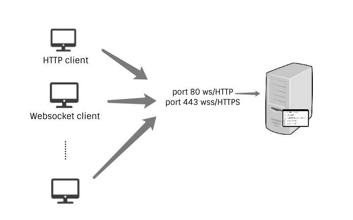

<!DOCTYPE html>
<html lang="en">
<head><meta name="generator" content="Hexo 3.8.0">
  <meta charset="utf-8">
  
  
  
    <meta name="description" content="forever young">
  
  <meta name="viewport" content="width=device-width, initial-scale=1, maximum-scale=1">
  <title>
    初识 WebSocket |
    
    xqyoung&#39;s blog</title>
  
    <link rel="shortcut icon" href="/favicon.ico">
  
  <link rel="stylesheet" href="/css/style.css">
  
    <link rel="stylesheet" href="/fancybox/jquery.fancybox.min.css">
  
  <script src="/js/pace.min.js"></script>
</head>
</html>
<body>
<main class="content">
  <section class="outer">
  <article id="post-websocket-beginner" class="article article-type-post" itemscope="" itemprop="blogPost" data-scroll-reveal="">

    <div class="article-inner">
        
            <header class="article-header">
                
  
    <h1 class="article-title" itemprop="name">
      初识 WebSocket
    </h1>
  
  


            </header>
            

                
                    <div class="article-meta">
                        <a href="/2018/11/25/websocket-beginner/" class="article-date">
  <time datetime="2018-11-25T15:03:25.000Z" itemprop="datePublished">2018-11-25</time>
</a>
                            
  <div class="article-category">
    <a class="article-category-link" href="/categories/网络/">网络</a>
  </div>

                    </div>
                    

                        
                            
    <div class="tocbot"></div>


                                

                                    <div class="article-entry" itemprop="articleBody">
                                        


                                            

                                                
                                                                    <p>WebSocket 是一种协议，<a href="https://tools.ietf.org/html/rfc6455" target="_blank" rel="noopener">RFC 6455</a> 指出了它的目的：为基于浏览器的应用提供一种机制，使得应用可以在不依赖多条 HTTP 链接的情况（使用 XMLHttpRequest ，iframe 或长轮询）下与服务器进行通信。</p>
<h3 id="WebSocket-链接过程"><a href="#WebSocket-链接过程" class="headerlink" title="WebSocket 链接过程"></a>WebSocket 链接过程</h3><p>接下来用一个简单的例子，了解 WebSocket 链接的建立和通信过程。</p>
<p>Server 端：</p>
<figure class="highlight javascript"><table><tr><td class="gutter"><pre><span class="line">1</span><br><span class="line">2</span><br><span class="line">3</span><br><span class="line">4</span><br><span class="line">5</span><br><span class="line">6</span><br><span class="line">7</span><br><span class="line">8</span><br><span class="line">9</span><br><span class="line">10</span><br><span class="line">11</span><br></pre></td><td class="code"><pre><span class="line"><span class="keyword">const</span> WebSocket = <span class="built_in">require</span>(<span class="string">'ws'</span>);</span><br><span class="line"> </span><br><span class="line"><span class="keyword">const</span> wss = <span class="keyword">new</span> WebSocket.Server(&#123; <span class="attr">port</span>: <span class="number">8080</span> &#125;);</span><br><span class="line"> </span><br><span class="line">wss.on(<span class="string">'connection'</span>, <span class="function"><span class="keyword">function</span> <span class="title">connection</span>(<span class="params">ws</span>) </span>&#123;</span><br><span class="line">  ws.on(<span class="string">'message'</span>, <span class="function"><span class="keyword">function</span> <span class="title">incoming</span>(<span class="params">message</span>) </span>&#123;</span><br><span class="line">    <span class="built_in">console</span>.log(<span class="string">'received: %s'</span>, message);</span><br><span class="line">  &#125;);</span><br><span class="line"> </span><br><span class="line">  ws.send(<span class="string">'something'</span>);</span><br><span class="line">&#125;);</span><br></pre></td></tr></table></figure>
<p>Client 端：</p>
<figure class="highlight javascript"><table><tr><td class="gutter"><pre><span class="line">1</span><br><span class="line">2</span><br><span class="line">3</span><br><span class="line">4</span><br><span class="line">5</span><br><span class="line">6</span><br><span class="line">7</span><br><span class="line">8</span><br><span class="line">9</span><br><span class="line">10</span><br><span class="line">11</span><br></pre></td><td class="code"><pre><span class="line"><span class="keyword">const</span> socket = <span class="keyword">new</span> WebSocket(<span class="string">'ws://localhost:8080'</span>);</span><br><span class="line"></span><br><span class="line"><span class="comment">// Connection opened</span></span><br><span class="line">socket.addEventListener(<span class="string">'open'</span>, <span class="function"><span class="keyword">function</span> (<span class="params">event</span>) </span>&#123;</span><br><span class="line">  socket.send(<span class="string">'Hello Server!'</span>);</span><br><span class="line">&#125;);</span><br><span class="line"></span><br><span class="line"><span class="comment">// Listen for messages</span></span><br><span class="line">socket.addEventListener(<span class="string">'message'</span>, <span class="function"><span class="keyword">function</span> (<span class="params">event</span>) </span>&#123;</span><br><span class="line">  <span class="built_in">console</span>.log(<span class="string">'Message from server '</span>, event.data);</span><br><span class="line">&#125;);</span><br></pre></td></tr></table></figure>
<h4 id="TCP-三次握手"><a href="#TCP-三次握手" class="headerlink" title="TCP 三次握手"></a>TCP 三次握手</h4><p>WebSocket 本质上还是基于 TCP 协议，所以 WebSocket client 和 server 通信的第一步，依然是建立 TCP 链接。这一点和 HTTP 协议的表现差不多。</p>
<h4 id="协议升级"><a href="#协议升级" class="headerlink" title="协议升级"></a>协议升级</h4><p>WebSocket 建立链接的握手过程，是要适配基于 HTTP 的服务端软件和中间件的，所以一个端口，可以同时允许一个 HTTP 客户端和一个服务器通信，或者一个 WebSocket 客户端和这个服务器通信。</p>
<p></p>
<p>TCP 建立后，客户端发起协议升级请求，下面是请求头部的部分信息。WebSocket 要求 HTTP 版本至少为 1.1 ，并且只支持 GET 请求。</p>
<figure class="highlight plain"><table><tr><td class="gutter"><pre><span class="line">1</span><br><span class="line">2</span><br><span class="line">3</span><br><span class="line">4</span><br><span class="line">5</span><br><span class="line">6</span><br><span class="line">7</span><br><span class="line">8</span><br></pre></td><td class="code"><pre><span class="line">GET ws://localhost:8080/ HTTP/1.1</span><br><span class="line">Host: localhost:8080</span><br><span class="line">Connection: Upgrade</span><br><span class="line">Upgrade: websocket</span><br><span class="line">Origin: http://localhost:3000</span><br><span class="line">Sec-WebSocket-Version: 13</span><br><span class="line">Sec-WebSocket-Key: 8NgftYvA8Vyr7cGRS8WdpA==</span><br><span class="line">Sec-WebSocket-Extensions: permessage-deflate; client_max_window_bits</span><br></pre></td></tr></table></figure>
<ul>
<li>Upgrade 字段，值为 <code>websocket</code> ，表示要升级到 WebSocket 协议。</li>
<li>Sec-WebSocket-Version 字段，表示 WebSocket 的版本。如果服务端不支持该版本，需要返回一个 <code>Sec-WebSocket-Version</code> header ，里面包含服务端支持的版本号。</li>
<li>Sec-WebSocket-Key 字段，与后面服务端响应首部的 Sec-WebSocket-Accept 是配套的，用于告知客户端，服务器愿意初始化 WebSocket 链接。</li>
<li>Sec-WebSocket-Extensions 可选字段，表示协议级别上（可能为空）服务器可以使用的扩展。</li>
</ul>
<p>服务端同意协议升级：</p>
<figure class="highlight plain"><table><tr><td class="gutter"><pre><span class="line">1</span><br><span class="line">2</span><br><span class="line">3</span><br><span class="line">4</span><br></pre></td><td class="code"><pre><span class="line">HTTP/1.1 101 Switching Protocols</span><br><span class="line">Upgrade: websocket</span><br><span class="line">Connection: Upgrade</span><br><span class="line">Sec-WebSocket-Accept: JAz1fxUy5f9LbUgeVcToNl0yWzA=</span><br></pre></td></tr></table></figure>
<h4 id="Sec-WebSocket-Accept-的计算"><a href="#Sec-WebSocket-Accept-的计算" class="headerlink" title="Sec-WebSocket-Accept 的计算"></a>Sec-WebSocket-Accept 的计算</h4><ol>
<li>将客户端的 <code>Sec-WebSocket-Key</code> 跟 <code>258EAFA5-E914-47DA-95CA-C5AB0DC85B11</code> 拼接。</li>
<li>计算拼接值的 SHA1 哈希值，转换为 Base64 编码。</li>
</ol>
<p><code>Sec-WebSocket-Key</code> 和 <code>Sec-WebSocket-Accept</code> 这一对配套的头部信息有什么用呢？<a href="https://tools.ietf.org/html/rfc6455#page-7" target="_blank" rel="noopener">RFC 6455</a> 是这样解释的：服务端要给客户端一个准信，它已经收到服务端的 WebSocket 握手请求了，针对这个客户端，服务端不接受非 WebSocket 链接，这样可以防止攻击者通过 XMLHttpRequest 或表单提交向 WebSocket 服务器发送伪装过的包。</p>
<h4 id="数据帧格式"><a href="#数据帧格式" class="headerlink" title="数据帧格式"></a>数据帧格式</h4><p>WebSocket 客户端、服务端通信的最小单位是帧（frame），由 1 个或多个帧组成一条完整的消息（message）。</p>
<p>发送端：将消息切割成多个帧，并发送给服务端；</p>
<p>接收端：接收消息帧，并将关联的帧重新组装成完整的消息；</p>
<h5 id="帧格式详解"><a href="#帧格式详解" class="headerlink" title="帧格式详解"></a>帧格式详解</h5><p>参考 <a href="https://tools.ietf.org/html/rfc6455#section-5.2" target="_blank" rel="noopener">RFC 6455 5.2</a></p>
<figure class="highlight plain"><table><tr><td class="gutter"><pre><span class="line">1</span><br><span class="line">2</span><br><span class="line">3</span><br><span class="line">4</span><br><span class="line">5</span><br><span class="line">6</span><br><span class="line">7</span><br><span class="line">8</span><br><span class="line">9</span><br><span class="line">10</span><br><span class="line">11</span><br><span class="line">12</span><br><span class="line">13</span><br><span class="line">14</span><br><span class="line">15</span><br><span class="line">16</span><br><span class="line">17</span><br><span class="line">18</span><br></pre></td><td class="code"><pre><span class="line"> 0                   1                   2                   3</span><br><span class="line"> 0 1 2 3 4 5 6 7 8 9 0 1 2 3 4 5 6 7 8 9 0 1 2 3 4 5 6 7 8 9 0 1</span><br><span class="line">+-+-+-+-+-------+-+-------------+-------------------------------+</span><br><span class="line">|F|R|R|R| opcode|M| Payload len |    Extended payload length    |</span><br><span class="line">|I|S|S|S|  (4)  |A|     (7)     |             (16/64)           |</span><br><span class="line">|N|V|V|V|       |S|             |   (if payload len==126/127)   |</span><br><span class="line">| |1|2|3|       |K|             |                               |</span><br><span class="line">+-+-+-+-+-------+-+-------------+ - - - - - - - - - - - - - - - +</span><br><span class="line">|     Extended payload length continued, if payload len == 127  |</span><br><span class="line">+ - - - - - - - - - - - - - - - +-------------------------------+</span><br><span class="line">|                               |Masking-key, if MASK set to 1  |</span><br><span class="line">+-------------------------------+-------------------------------+</span><br><span class="line">| Masking-key (continued)       |          Payload Data         |</span><br><span class="line">+-------------------------------- - - - - - - - - - - - - - - - +</span><br><span class="line">:                     Payload Data continued ...                :</span><br><span class="line">+ - - - - - - - - - - - - - - - - - - - - - - - - - - - - - - - +</span><br><span class="line">|                     Payload Data continued ...                |</span><br><span class="line">+---------------------------------------------------------------+</span><br></pre></td></tr></table></figure>
<p><strong>FIN</strong> ，1 比特</p>
<p>指示这个帧是不是消息的最后一个分片（fragment）。1 表示是，0 表示否。</p>
<p><strong>RSV1，RSV2，RSV3</strong> ，3 比特</p>
<p>这个是跟 WebSocket 扩展有关的，全 0 表示没有使用任何扩展。</p>
<p><strong>Opcode</strong> ，4 比特</p>
<p>定义了对载荷数据（Payload Data）的解析。它有以下值：</p>
<ul>
<li><p><code>%x0</code> 表示一个延续帧，本次数据传输采用了数据分片，当前收到的数据帧为其中一个数据分片。</p>
</li>
<li><p><code>%x1</code> 表示一个文本帧</p>
</li>
<li><p><code>%x2</code> 表示一个二进制帧</p>
</li>
<li><p><code>%x3-7</code> 预保留</p>
</li>
<li><p><code>%x8</code> 表示链接关闭</p>
</li>
<li><p><code>%x9</code> 表示一个 ping 操作</p>
</li>
<li><p><code>%xA</code> 表示一个 pong 操作</p>
</li>
<li><p><code>%xB-F</code> 预保留</p>
</li>
</ul>
<p><strong>Mask</strong> ，1 比特</p>
<p>表示是否要对数据载荷进行掩码操作。从客户端向服务端发送数据时，需要对数据进行掩码操作；从服务端向客户端发送数据时，不需要对数据进行掩码操作。</p>
<p>如果服务端接收到的数据没有进行过掩码操作，服务端需要断开连接。</p>
<p>如果Mask是1，那么在Masking-key中会定义一个掩码键（masking key），并用这个掩码键来对数据载荷进行反掩码。所有客户端发送到服务端的数据帧，Mask 都是 1 。</p>
<p><strong>Payload length</strong>，7 比特，7+16 比特，或 7+64 比特</p>
<p>Payload data 的长度按字节计算，如果 Payload data 的长度为：</p>
<ul>
<li>0-125 字节，那么 Payload length 就是这个值</li>
<li>126 字节，后续 2 个字节代表一个 16 位的无符号整数，该无符号整数的值为数据的长度</li>
<li>127 字节，后续8个字节代表一个64位的无符号整数（最高位为0），该无符号整数的值为数据的长度</li>
</ul>
<p><strong>Masking-key</strong> 0 或 4 字节</p>
<p>所有从客户端传送到服务端的数据帧，数据载荷都进行了掩码操作，Mask 为 1，且携带了 4 字节的 Masking-key。如果 Mask 为 0 ，则没有 Masking-key 。</p>
<p>备注：载荷数据的长度，不包括mask key的长度。</p>
<p><strong>Payload data</strong> (x+y) 字节</p>
<p>包括了扩展数据、应用数据。其中，扩展数据x字节，应用数据y字节。</p>
<h4 id="数据传递"><a href="#数据传递" class="headerlink" title="数据传递"></a>数据传递</h4><p>客户端和服务器建立 WebSocket 链接后，后续的操作都是基于数据帧。WebSocket 根据 <code>opcode</code> 来区分操作的类型。比如 0x8 表示断开连接，0x0-0x2 表示数据交互。</p>
<p>下面是<a href="https://developer.mozilla.org/en-US/docs/Web/API/WebSockets_API/Writing_WebSocket_servers" target="_blank" rel="noopener">MDN</a>的例子：</p>
<figure class="highlight plain"><table><tr><td class="gutter"><pre><span class="line">1</span><br><span class="line">2</span><br><span class="line">3</span><br><span class="line">4</span><br><span class="line">5</span><br><span class="line">6</span><br><span class="line">7</span><br><span class="line">8</span><br><span class="line">9</span><br><span class="line">10</span><br><span class="line">11</span><br><span class="line">12</span><br><span class="line">13</span><br></pre></td><td class="code"><pre><span class="line">// 文本帧，消息已经发送完毕，没有后续的帧</span><br><span class="line">Client: FIN=1, opcode=0x1, msg=&quot;hello&quot;</span><br><span class="line">Server: (process complete message immediately) Hi.</span><br><span class="line"></span><br><span class="line">// 文本帧，消息未发送完毕，还有后续的帧</span><br><span class="line">Client: FIN=0, opcode=0x1, msg=&quot;and a&quot;</span><br><span class="line">Server: (listening, new message containing text started)</span><br><span class="line">// 分片帧，消息未发送完毕，还有后续的帧，当前的数据帧需要接在上一条数据帧之后</span><br><span class="line">Client: FIN=0, opcode=0x0, msg=&quot;happy new&quot;</span><br><span class="line">Server: (listening, payload concatenated to previous message)</span><br><span class="line">// 分片帧，消息发送完毕，没有后续的帧，当前的数据帧需要接在上一条数据帧之后</span><br><span class="line">Client: FIN=1, opcode=0x0, msg=&quot;year!&quot;</span><br><span class="line">Server: (process complete message) Happy new year to you too!</span><br></pre></td></tr></table></figure>
<h4 id="断开链接"><a href="#断开链接" class="headerlink" title="断开链接"></a>断开链接</h4><p>网络断开或页面关闭，会导致 WebSocket 关闭。如果通信双方长时间（默认 60 s）无数据交互，链接也会断开。断开的操作其实是 TCP 四挥手。</p>
<p>如果希望客户端和服务端保持稳定的链接，可以定时向对方发送心跳包。</p>
<ul>
<li>发送方-&gt;接收方：ping</li>
<li>接收方-&gt;发送方：pong</li>
</ul>
<p>ping、pong 的操作，对应的是 WebSocket 的两个控制帧，opcode 分别是 0x9、0xA 。</p>
<p>有个工具<a href="https://www.browsersync.io/" target="_blank" rel="noopener">browser-sync</a> 就用到 WebSocket ，它可以做到“一端更新，多端同步”的效果。其实就是在你开发的页面注入了一段脚本，在这个脚本里面启用了 WebSocket ，和本地服务通信。所以可以实现：浏览器-&gt;服务端-&gt;其他客户端 的刷新机制。</p>
<h3 id="细节"><a href="#细节" class="headerlink" title="细节"></a>细节</h3><h4 id="掩码算法"><a href="#掩码算法" class="headerlink" title="掩码算法"></a>掩码算法</h4><p>ENCODED：原码</p>
<p>MASK：掩码键</p>
<p>掩码、反掩码都是采用以下算法：</p>
<figure class="highlight javascript"><table><tr><td class="gutter"><pre><span class="line">1</span><br><span class="line">2</span><br><span class="line">3</span><br><span class="line">4</span><br></pre></td><td class="code"><pre><span class="line"><span class="keyword">var</span> DECODED = <span class="string">""</span>;</span><br><span class="line"><span class="keyword">for</span> (<span class="keyword">var</span> i = <span class="number">0</span>; i &lt; ENCODED.length; i++) &#123;</span><br><span class="line">    DECODED[i] = ENCODED[i] ^ MASK[i % <span class="number">4</span>];</span><br><span class="line">&#125;</span><br></pre></td></tr></table></figure>
<p>一下转载自<a href="https://www.cnblogs.com/chyingp/p/websocket-deep-in.html" target="_blank" rel="noopener">WebSocket协议：5分钟从入门到精通</a></p>
<p>WebSocket 协议中，数据掩码的作用是增强协议的安全性。但数据掩码并不是为了保护数据本身，因为算法本身是公开的，运算也不复杂。除了加密通道本身，似乎没有太多有效的保护通信安全的办法。</p>
<p>那么为什么还要引入掩码计算呢，除了增加计算机器的运算量外似乎并没有太多的收益。</p>
<p>答案还是两个字：安全。但并不是为了防止数据泄密，而是为了防止早期版本的协议中存在的代理缓存污染攻击（proxy cache poisoning attacks）等问题。</p>
<p>在正式描述攻击步骤之前，我们假设有如下参与者：</p>
<ul>
<li>攻击者、攻击者自己控制的服务器（简称“邪恶服务器”）、攻击者伪造的资源（简称“邪恶资源”）</li>
<li>受害者、受害者想要访问的资源（简称“正义资源”）</li>
<li>受害者实际想要访问的服务器（简称“正义服务器”）</li>
<li>中间代理服务器</li>
</ul>
<p>攻击步骤一：</p>
<ol>
<li>攻击者浏览器 向 邪恶服务器 发起WebSocket连接。根据前文，首先是一个协议升级请求。<br>协议升级请求 实际到达 代理服务器。</li>
<li>代理服务器 将协议升级请求转发到 邪恶服务器。</li>
<li>邪恶服务器 同意连接，代理服务器 将响应转发给 攻击者。</li>
<li>由于 upgrade 的实现上有缺陷，代理服务器 以为之前转发的是普通的HTTP消息。因此，当协议服务器 同意连接，代理服务器 以为本次会话已经结束。</li>
</ol>
<p>攻击步骤二：</p>
<ol>
<li>攻击者 在之前建立的连接上，通过WebSocket的接口向 邪恶服务器 发送数据，且数据是精心构造的HTTP格式的文本。其中包含了 正义资源 的地址，以及一个伪造的host（指向正义服务器）。（见后面报文）</li>
<li>请求到达 代理服务器 。虽然复用了之前的TCP连接，但 代理服务器 以为是新的HTTP请求。</li>
<li>代理服务器 向 邪恶服务器 请求 邪恶资源。</li>
<li>邪恶服务器 返回 邪恶资源。代理服务器 缓存住 邪恶资源（url是对的，但host是 正义服务器 的地址）。</li>
</ol>
<p>到这里，受害者可以登场了：</p>
<ol>
<li>受害者 通过 代理服务器 访问 正义服务器 的 正义资源。</li>
<li>代理服务器 检查该资源的url、host，发现本地有一份缓存（伪造的）。</li>
<li>代理服务器 将 邪恶资源 返回给 受害者。</li>
<li>受害者 卒。</li>
</ol>
<p>附：前面提到的精心构造的“HTTP请求报文”。</p>
<figure class="highlight plain"><table><tr><td class="gutter"><pre><span class="line">1</span><br><span class="line">2</span><br><span class="line">3</span><br><span class="line">4</span><br><span class="line">5</span><br></pre></td><td class="code"><pre><span class="line">Client → Server:</span><br><span class="line">POST /path/of/attackers/choice HTTP/1.1 Host: host-of-attackers-choice.com Sec-WebSocket-Key: &lt;connection-key&gt;</span><br><span class="line">Server → Client:</span><br><span class="line">HTTP/1.1 200 OK</span><br><span class="line">Sec-WebSocket-Accept: &lt;connection-key&gt;</span><br></pre></td></tr></table></figure>
<p>最初的提案是对数据进行加密处理。基于安全、效率的考虑，最终采用了折中的方案：对数据载荷进行掩码处理。</p>
<p>需要注意的是，这里只是限制了浏览器对数据载荷进行掩码处理，但是坏人完全可以实现自己的WebSocket客户端、服务端，不按规则来，攻击可以照常进行。</p>
<p>但是对浏览器加上这个限制后，可以大大增加攻击的难度，以及攻击的影响范围。如果没有这个限制，只需要在网上放个钓鱼网站骗人去访问，一下子就可以在短时间内展开大范围的攻击。</p>
<blockquote>
<p>参考<br><a href="https://www.cnblogs.com/chyingp/p/websocket-deep-in.html" target="_blank" rel="noopener">WebSocket协议：5分钟从入门到精通</a><br><a href="https://tools.ietf.org/html/rfc6455" target="_blank" rel="noopener">RFC 6455</a></p>
</blockquote>

                                                                        
                                    </div>
                                    <footer class="article-footer">
                                        <a data-url="http://www.xqyoung.com/2018/11/25/websocket-beginner/" data-id="ckcrdomgn001s0yjeowy884d9" class="article-share-link">
                                            Share
                                        </a>
                                        
  <ul class="article-tag-list"><li class="article-tag-list-item"><a class="article-tag-list-link" href="/tags/网络/">网络</a></li></ul>

                                    </footer>

    </div>

    
        
  <nav class="article-nav">
    
      <a href="/2019/01/05/line-height/" class="article-nav-link">
        <strong class="article-nav-caption">Newer</strong>
        <div class="article-nav-title">
          
            css line-height &amp; vertical-align
          
        </div>
      </a>
    
    
      <a href="/2018/11/21/css-Houdini/" class="article-nav-link">
        <strong class="article-nav-caption">Older</strong>
        <div class="article-nav-title">CSS Houdini</div>
      </a>
    
  </nav>


            

                
                    
                        
                            

</article>
</section>
  <footer class="footer">
  <div class="outer">
    <div class="float-right">
      <ul class="list-inline">
  
    <li><i class="fe fe-smile-alt"></i> <span id="busuanzi_value_site_uv"></span></li>
  
    <li><i class="fe fe-bookmark"></i> <span id="busuanzi_value_page_pv"></span></li>
  
</ul>
    </div>
    <ul class="list-inline">
      <li>&copy; 2020 xqyoung&#39;s blog</li>
      <li>Powered by <a href="http://hexo.io/" target="_blank">Hexo</a></li>
      <li>Theme  <a href="https://github.com/zhwangart/hexo-theme-ocean">Ocean</a></li>
    </ul>
  </div>
</footer>

</main>
<aside class="sidebar">
  <button class="navbar-toggle"></button>
<nav class="navbar">
  
    <div class="logo">
      <a href="/"></a>
    </div>
  
  <ul class="nav nav-main">
    
      <li class="nav-item">
        <a class="nav-item-link" href="/">Home</a>
      </li>
    
      <li class="nav-item">
        <a class="nav-item-link" href="/archives">Archives</a>
      </li>
    
      <li class="nav-item">
        <a class="nav-item-link" href="/categories">Categories</a>
      </li>
    
      <li class="nav-item">
        <a class="nav-item-link" href="/tags">Tags</a>
      </li>
    
    <li class="nav-item">
      <a class="nav-item-link nav-item-search" title="Search">
        <i class="fe fe-search"></i>
        Search
      </a>
    </li>
  </ul>
</nav>
<nav class="navbar navbar-bottom">
  <ul class="nav">
    <li class="nav-item">
      <div class="totop" id="totop">
  <i class="fe fe-rocket"></i>
</div>
    </li>
    <li class="nav-item">
      
        <a class="nav-item-link" target="_blank" href="/atom.xml" title="RSS Feed">
          <i class="fe fe-feed"></i>
        </a>
      
    </li>
  </ul>
</nav>
<div class="search-form-wrap">
  <div class="local-search local-search-plugin">
  <input type="search" id="local-search-input" class="local-search-input" placeholder="Search...">
  <div id="local-search-result" class="local-search-result"></div>
</div>
</div>
</aside>
<script src="/js/jquery-2.0.3.min.js"></script>
<script src="/js/jquery.justifiedGallery.min.js"></script>
<script src="/js/lazyload.min.js"></script>
<script src="/js/busuanzi-2.3.pure.min.js"></script>

  <script src="/fancybox/jquery.fancybox.min.js"></script>


  <script src="/js/tocbot.min.js"></script>
  <script>
    // Tocbot_v4.7.0  http://tscanlin.github.io/tocbot/
    tocbot.init({
      tocSelector: '.tocbot',
      contentSelector: '.article-entry',
      headingSelector: 'h1, h2, h3, h4, h5, h6',
      hasInnerContainers: true,
      scrollSmooth: true,
      positionFixedSelector: '.tocbot',
      positionFixedClass: 'is-position-fixed',
      fixedSidebarOffset: 'auto',
    });
  </script>


<script src="/js/ocean.js"></script>
<script src="/js/search.js"></script>

</body>
</html>